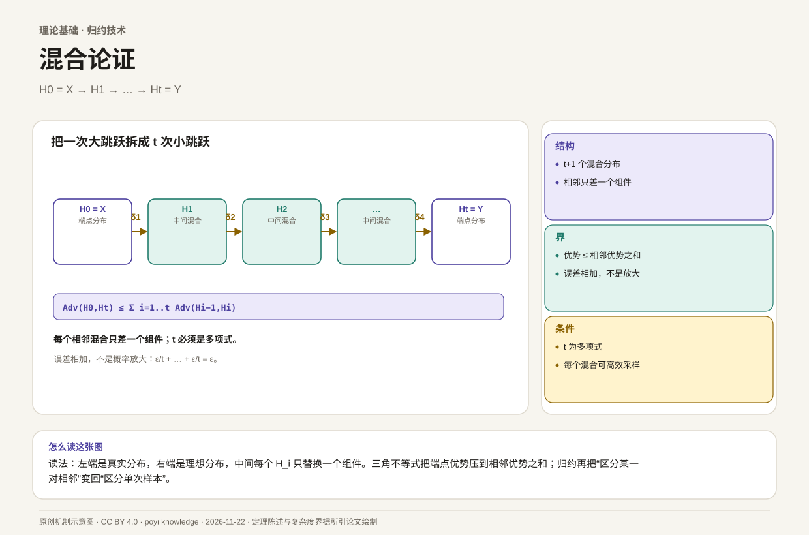
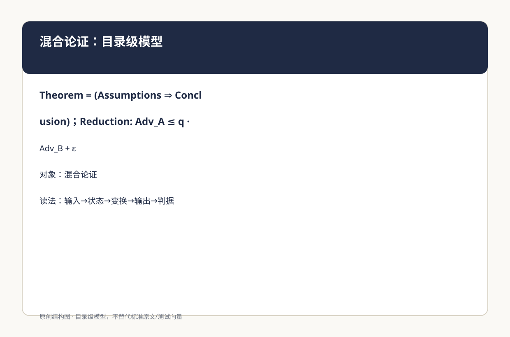

原理与机制
定理：混合论证（Hybrid Argument）。### 一条链，而不是一步
要证明两个分布 X 与 Y 计算不可区分，混合论证不直接比较它们，而是构造 t+1 个分布 H0=X, H1, …, Ht=Y，让每个相邻对只差一个组件。只要每对相邻混合都由同一类假设保证不可区分，端点也不可区分。### 三角不等式给出界
对任意区分器 D，定义优势 Adv(H0,Ht;D) = |Pr[D(H0)=1] − Pr[D(Ht)=1]|。把中间的 H1…Ht−1 插进来，逐项相消： Adv(H0,Ht;D) ≤ Σ_{i=1}^{t} Adv(Hi−1,Hi;D)。这不是概率放大，而是误差相加：t 个相邻优势各为 ε/t 时，总和才是 ε。### 标准用法：一次只换一个组件
多消息 IND-CPA 的证明把 H_i 定义为“前 i 条密文是真实密文，其余是随机密文”。单消息 IND-CPA 保证每一对相邻混合不可区分；t=q(n) 是多项式，所以 q 条密文仍不可区分。

为什么重要
混合论证把“整个系统不可区分”拆成“每次只替换一个组件”。PRG 的多位扩展、KEM/DEM 混合加密、理想/现实游戏、组合安全，都靠这条链把一个大跳跃拆成许多小跳跃。### 它买到了什么，没买到什么
买到的是：只要相邻假设成立，端点成立；没买到的是：超过相邻假设的结论。若某个组件本身已被攻破，混合链不会自动修复它。它也不提供具体比特安全，只有渐近或带损失的界。
应用与实例
- 多消息 IND-CPA：H_i 的前 i 条为真实密文，其余为随机；把 q 次查询归约到一次查询。- PRG 迭代：H_i 的前 i 个输出来自 PRG，其余来自真随机；每扩一位只跨一个相邻混合。- KEM/DEM：先把会话密钥替换为随机密钥（KEM 安全），再把 DEM 密文替换为随机串（DEM 安全），两个优势相加。- 代码级 game hopping：每改一行代码定义一个混合，最后把相邻跳跃的差距逐个归约。

边界与攻击面
1.混合数不是多项式。若 t=2^n，把 ε 分成 2^n 份后每一份都可忽略，归约得不到矛盾。2.某个混合无法高效采样。概率总体只有在能被多项式时间算法采样时才适合做归约。3.相邻差距不能由假设推出。混合论证本身不产生计算假设。4.自适应状态。若第 i 个组件能读到第 i+1 个组件的秘密状态，简单“替换一个组件”不成立，需要更强的混合或模拟。### 紧致性
标准混合证明通常损失 t 因子。q 次查询的方案会得到“q 倍优势”的界；要证明 128 位安全，不能只看单次优势。紧致归约需要直接论证、公共硬币或其他技术，不能靠混合论证自动获得。
历史与背景
Goldwasser 与 Micali 在 1984 年《Probabilistic Encryption》中把计算不可区分作为安全定义，并用混合论证证明多次采样不扩大区分优势；Goldreich 在《Foundations of Cryptography》中把它写成标准引理。### 今天的地位
它已是密码学证明的基本工具，而不是某个算法的专属技巧。名称来自“混合分布”：在真实与理想之间插入中间分布，像调色一样逐层过渡。
技术参数与复算边界
该条目的形式模型是 (\Pr[\mathrm{Bad}_A(\lambda)]\le \varepsilon(\lambda))。输入：输入：混合论证的公开参数、密钥/随机数与消息；变量说明：Bad 为归约中定义的失败事件，ε 为可忽略函数。 预期输出：按 混合论证 的规范执行后得到可验证的输出或可比较的优势界。 复算必须给出输入、步骤、输出和单位；示例只演示流程，不替代标准测试向量。
复杂度由密钥长度、分组/状态规模、轮数、随机数质量和敌手模型共同决定；参数越界、版本差异与实现侧信道都可能使公式结论失效。已登记限制：该条目只给出形式模型与可复算步骤，不声称已完成生产实现、侧信道认证或第三方安全评估。
参数与状态规模
公式 (\Pr[\mathrm{Bad}_A(\lambda)]\le \varepsilon(\lambda)) 的输入、输出和单位必须逐项登记；复算顺序为：1. 定义失败事件 2. 构造归约把攻击者转成困难问题求解器 3. 证明失败概率上界。
状态规模、密钥长度、分组长度和轮数决定复杂度；这些量不能从标题推断，必须以标准或实现文档为准。
逐步示例与核验
形式模型与复算步骤
[\Pr[\mathrm{Bad}_A(\lambda)]\le \varepsilon(\lambda)]
混合论证的公开参数、密钥/随机数与消息；变量说明：Bad 为归约中定义的失败事件，ε 为可忽略函数。1.定义失败事件。2.构造归约把攻击者转成困难问题求解器。3.证明失败概率上界。边界：公式只覆盖已登记的参数与假设；参数取值、标准版本和实现细节仍以来源为准。
参考出处
- Wikipedia search entry for 混合论证. https://zh.wikipedia.org/w/index.php?search=%E6%B7%B7%E5%90%88%E8%AE%BA%E8%AF%81
- Handbook of Applied Cryptography (Menezes, van Oorschot, Vanstone). https://www.cacr.math.uwaterloo.ca/hac/